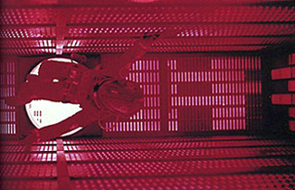

Die Dreharbeiten für den Film "2001: A Space Odyssey", von Stanley Kubrick, beginnen. Kubricks Co-Autor ist Arthur C. Clark, von dem ein Großteil der Geschichte stammt. Einfluss hatte auch "Also sprach Zarathustra", von Nietsche. Im Film wird der dominante Computer "HAL 9000" vorgestellt, den ein Besatzungsmitglied des Raumschiffs "Discovery" abschalten muss, um zu überleben. Der Film wird 1968 fertiggestellt. Der Autor A. C. Clarke publizierte als erster die Idee, dass Satelliten die Erde umkreisen, um als weltweites Kommunikationssystem Verwendung zu finden. 1965 kommt im Forschungszentrum von General Electric (GE) in Schenectady, N.Y. ein hydraulisches, motorisiertes Exoskelett namens "Hardiman 1" zum Einsatz. Der Roboter konnte nur einen Arm seiner Konstruktion bewegen. Aber er hob einen Kühlschrank mit Leichtigkeit auf. Versuche seine beiden Beine gleichzeitig zu bewegen, resultierten in "gewalttätigen und unkontrollierbaren Bewegungen".